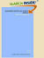

The Making of America
As of September, 2017, Cornell University Library's Making of America collection has been moved to Hathi Trust. In preparation for the move, OCR quality of the collection was improved. In addition, Hathi Trust provides full-text search and computational analysis for text collections, improving scholarly access to the Making of America materials.
The Cornell University Library Making of America Collection is a digital library of primary sources in American social history from the antebellum period through reconstruction. The collection is particularly strong in the subject areas of education, psychology, American history, sociology, religion, and science and technology. This site provides access to 267 monograph volumes and over 100,000 journal articles with 19th century imprints. The project represents a major collaborative endeavor in preservation and electronic access to historical texts.
The Making of America collection comprises the digitized pages of books and journals. This system allows you to view scanned images of the actual pages of the 19th century texts. Optical Character Recognition (OCR) has been performed on the images to enhance searching and accessing the texts. For more information on the Making of America project see About MOA.
Search the University of Michigan's Making of America Collection.
Making of America was made possible by a grant from The Andrew W. Mellon Foundation.
WHAT'S NEW
In August, 2012, we added 305 rescanned pages to American Missionary, American Whig Review, Atlantic Monthly and Bay State Monthly.
Get a print copy of our MOA Monographs!
The Cornell University Library Making of America collection is open to the general public, in accordance with the terms set forth in the Guidelines for Using Public Domain Text, Images, Audio and Video Reproduced from Cornell Digital Library Collections.